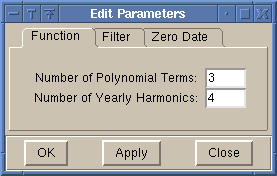
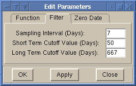
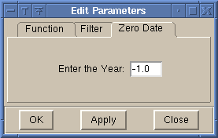

Parameters [Edit Menu]
The Parameters Dialog is for changing parameters of the function fit
and filtering of the data.
The following are the options of the Parameter dialog box:
-
Function Parameters

-
Modify the parameters of the initial function fit (
Equation 1).
These parameters are:
-
Number of polynomial terms.
Default = 3, except when number of years of
data <=2 then the number of polynomial terms = 2.
Maximum of 9 is allowed.
** IMPORTANT ** Whenever new data is read into the
program using either the open or import options,
the number of polynomial terms is reset to 3.
-
Number of harmonic terms.
Default = 4. Maximum of 10 is allowed.
-
Filter Parameters

-
Modify the parameters for the digital filtering of the residuals from the
function fit. These parameters are:
-
Sampling interval.
Default = 1 for daily averages, 7 for flask data,
30 for monthly average data. This value should be
as close as possible to the actual sampling interval.
DO NOT use a value smaller than the actual interval,
or the filter results will be in error due to aliasing.
-
Short term cutoff.
This is the cutoff value for the filter that smooths
the data. Default = 50 days for daily averages,
80 days for flask data and monthly averages. Note
that this has little affect on monthly averages since
this data is already very smooth.
-
Long term cutoff.
This is the cutoff value for the filter that removes
any yearly cycles and follows year to year variations.
Default = 667 days.
-
Zero Date for Coefficients

-
Modify the the date at which time = 0 for the coefficients of the
function fit. The default date is -1, which uses the first year from
the data.
Only the year can be specified, and January 1 is used as the day.